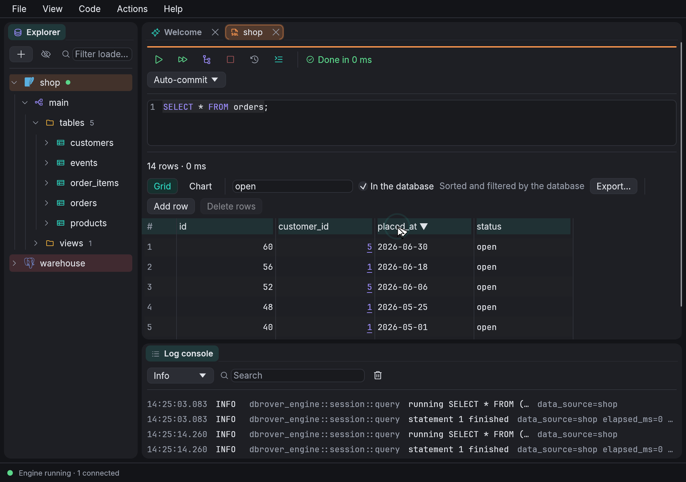
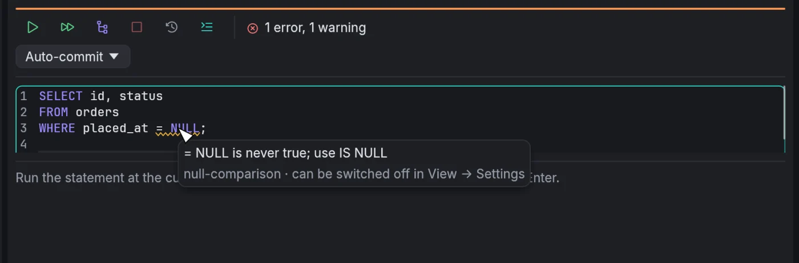
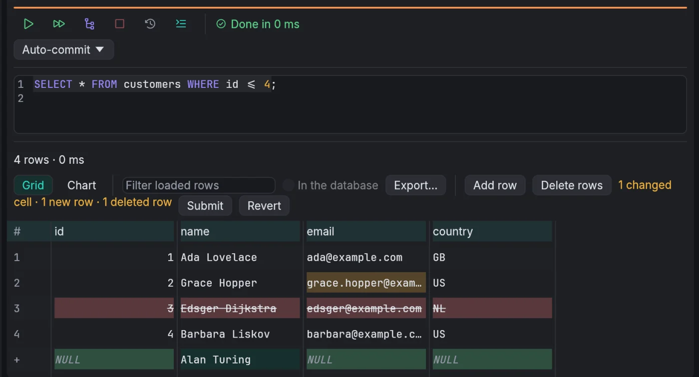
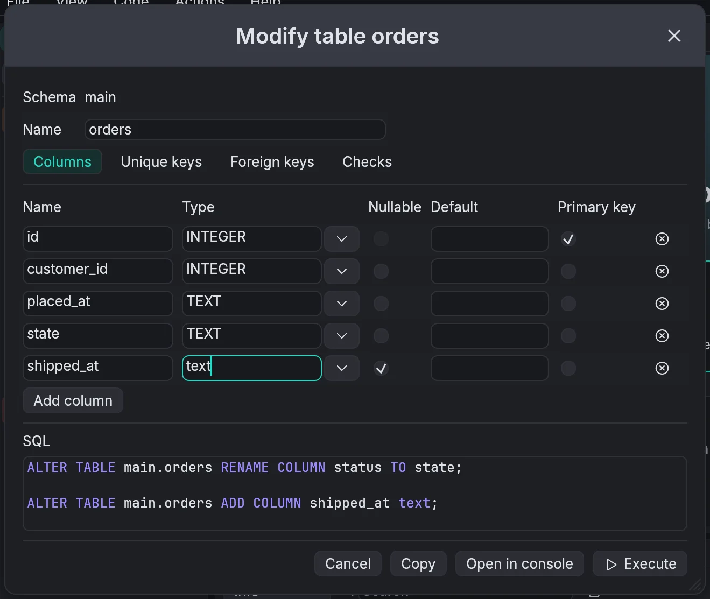
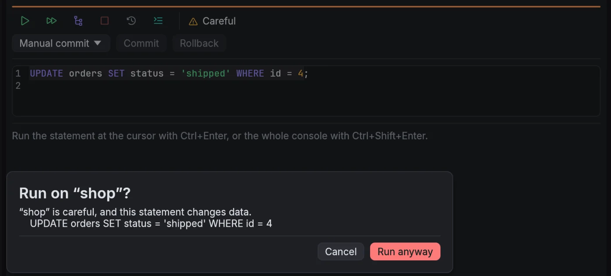
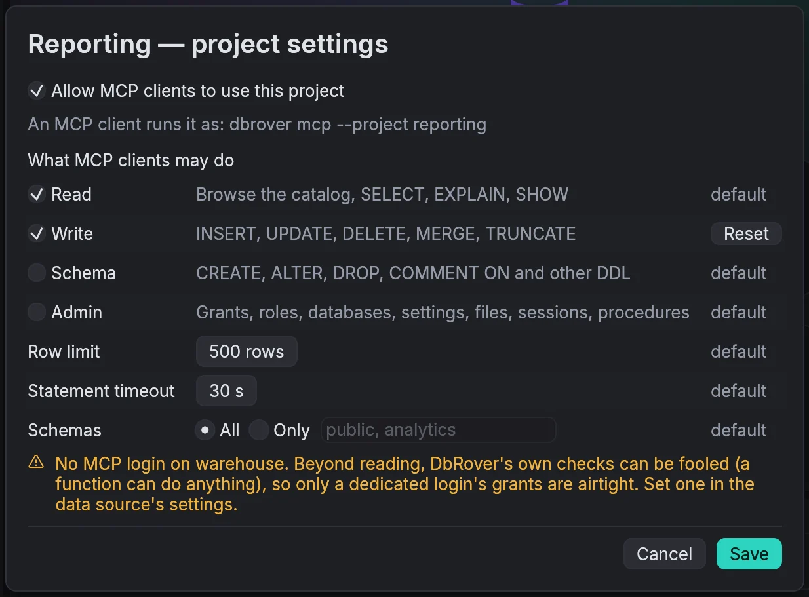
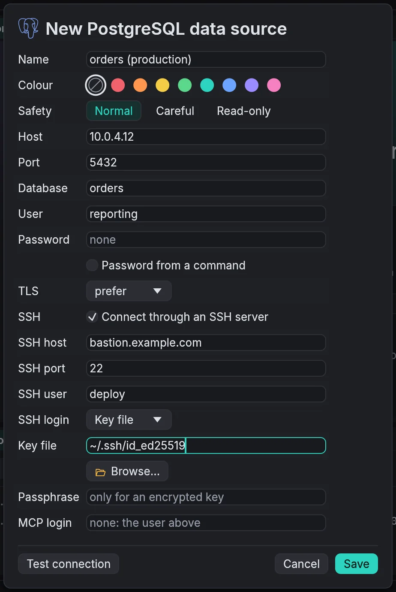

Native and quick
Rust and egui, with no browser engine or JVM inside. It opens in about a third of a second on a recent Mac, and the universal Mac download is 78 MB.
PostgreSQL · MySQL · MariaDB · SQLite · SQL Server · DuckDB · ClickHouse · Redis · MongoDB · Elasticsearch · OpenSearch
DbRover is a free, open-source desktop database tool written in Rust. Write SQL with completion from your catalog, edit rows in the grid, change tables without writing the DDL, keep production safe, and let an AI assistant in only as far as you allow.
Also for Linux: AppImage · .deb · every download

SELECT * FROM orders with
completion's help, running it, and having the database filter the 60 orders to the open
ones and sort them, newest first.
Rust and egui, with no browser engine or JVM inside. It opens in about a third of a second on a recent Mac, and the universal Mac download is 78 MB.
A built-in MCP server, off until you allow a project. Where the engine allows, the database itself keeps an assistant's reads read-only, and safety levels guard production.
MIT or Apache-2.0 on macOS, Windows and Linux. Nothing to sign up for, and settings in plain files you can read and keep in Git.
Writing SQL
Completion suggests tables after FROM and columns after an alias, and
follows CTEs and subqueries; cid finds customer_id. Problems
are marked as you type: = NULL, an UPDATE without
WHERE, an unknown column, and what the database itself says.
.sql files; edits made elsewhere are picked up.:name parameters, asked for as you run; find and replace with regular
expressions.
The results grid
Rows arrive 500 at a time. Sort and filter the rows loaded, or tick In the database to have it sort and filter every row.

Changing the schema
Dialogs for tables, indexes, views and materialized views, schemas, and PostgreSQL users and roles write the SQL and show it. Nothing runs until you press Execute, or open it in a console instead.

Staying safe
Each data source has a safety level. Normal asks before an
UPDATE or DELETE without WHERE.
Careful asks before every change, naming the data source, and opens
consoles in manual commit. Read-only refuses changes, and on
PostgreSQL, MySQL, MariaDB and SQLite the database enforces it too.

AI assistants through MCP
DbRover includes an MCP server. Allow a project, copy its configuration into Claude Desktop, Claude Code, Cursor or another client, and the assistant can list, describe, explain and query that project's data sources, with the DbRover window closed.

Connecting anywhere
PostgreSQL, MySQL, MariaDB, SQL Server and Azure SQL, ClickHouse over HTTP, Redis, Valkey and Dragonfly, MongoDB and Atlas, Elasticsearch, Elastic Cloud and OpenSearch, and DuckDB and SQLite files.
known_hosts.verify-full, with your own CA file and no OpenSSL to
install.${VARIABLE} placeholders in connection settings.
Making it yours
DbRover keeps its settings in files you can read and edit, next to each other.
keymap.toml rebinds the shortcuts.actions.toml adds your own SQL
to the explorer's and the grid's menus, with names and values quoted for you.snippets.toml adds snippets
to completion, with fields to Tab through.theme.toml changes the light
and dark themes' colours.# actions.toml
[[action]]
id = "row-count"
name = "Row count"
applies_to = ["table", "view"]
sql = "SELECT count(*) FROM {qualified_name}"
# snippets.toml
[[snippet]]
trigger = "sel"
body = "SELECT ${1:*}\nFROM ${2:table};"
# theme.toml
[dark]
primary = "#9a8bff"Oracle is planned.
A universal app for Apple silicon and Intel, macOS 11 or newer.
.dmgOr with Homebrew:
brew install --cask navasvarela/tap/dbroverNot signed by Apple yet, so the first launch needs Open Anyway.
For 64-bit Intel and AMD: an AppImage for most distributions, or a package for Debian and Ubuntu.
An installer for Windows 10 and 11 on 64-bit Intel and AMD. It installs DbRover for you alone, without administrator rights.
InstallerOr with winget:
winget install DbRover.DbRoverNot signed yet, so SmartScreen blocks the first run: More info, then Run anyway.
DbRover asks GitHub for a newer release when it starts, or from Help ›
Check for updates…. On macOS and in the AppImage, Install and
restart checks the update's signature and puts it in place, and so do Windows
copies installed with the installer; the .deb opens the
release page instead. The check sends nothing about you,
and can be turned off.
Every release has a
SHA256SUMS
file. In the folder with your download:
shasum -a 256 -c SHA256SUMS --ignore-missingFree and open source under MIT or Apache-2.0. The source, every release and the design docs are on GitHub.